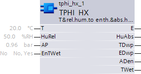

TPHI_HX: Temperature & relative humidity to enthalpy & absolute humidity
The TPHI_HX (FB421) block calculates the following values from the temperature and relative humidity (as per the h,x diagram):
- Absolute humidity.
- Air density.
- Enthalpy.
- Enthalpy of air at dew point.
- Dew point temperature of the air state.
- Wet-bulb temperature of the air state.
The following functions are integrated in the block:
- Air pressure connection (optional).
TPHI_HX_SiUn (FB421), TPHI_HX_UsUn (FB794), TPHI_HX_CaUn (FB789)

Inputs
Pin | E | Description |
T | pa | Temperature |
HuRel | pa | Relative humidity |
AP | pa | Air pressure Measured value for air pressure or constant value. See Engineering. |
EnTWet | pa | Enable wetbulb temperature |
Outputs
Pin | E | Description |
E | pa | Enthalpy Enthalpy of air converted from the inputs. |
HuAbs | a | Absolute humidity Absolute humidity of air converted from the inputs. |
TDwp | a | Dew point temperature Dew point temperature of air calculated from the inputs. The dew point temperature can be used as a setpoint in dew point control or for monitoring the surfaces where air possibly condenses. |
EDwp | a | Enthalpy at dew point |
ADen | a | Air density Air density calculated from the inputs. |
TWet | a | Wetbulb temperature Wetbulb temperature for the air calculated from the inputs. |
Input values
Pin | Description | Data type | Default value | E.g. Engineering unit or Text group | Min. | Max. |
T | Temperature | Real | 20.0 | °C | -50.0 | 150.0 |
68.0 | °F | -58.0 | 302.0 | |||
HuRel | Relative humidity | Real | 50.0 | %RH | 0.0 | 100.0 |
AP | Air pressure | Real | 0.96 | bar | 0.0 | 4.0 |
28.35 | inHg | 0.0 | 118.1 | |||
EnTWet | Enable wetbulb temp. | Boolean | 0 (No) | No, Yes |
|
|
Output values
Pin | Description | Data type | Default value | E.g. Engineering unit or Text group | Min. | Max. |
E | Enthalpy | Real | 40.0 | kJ/kg | 0.0 | 100.0 |
17.2 | Btu/lb | 0.0 | 43.0 | |||
HuAbs | Absolute humidity | Real | 7.8 | g/kg | 0.0 | 50.0 |
0.008 | lb/lbda | 0.0 | 0.05 | |||
TDwp | Dew point temperature | Real | 9.5 | °C | -50.0 | 150.0 |
49.1 | °F | -58.0 | 302.0 | |||
EDwp | Enthalpy at dew point | Real | 29.0 | kJ/kg | -50.0 | 150.0 |
12.5 | Btu/lb | -21.5 | 64.5 | |||
ADen | Air density | Real | 1.2 | kg/m3 | 0.0 | 5.0 |
0.075 | lb/ft3 | 0.0 | 0.312 | |||
TWet | Wetbulb temp. | Real | 13.8 | °C | -3.402822E38 | 3.402822E38 |
56.9 | °F | -3.402822E38 | 3.402822E38 |
Engineering
Parameterizing the air pressure [AP]
If the air pressure is not available as a measured variable, it can be defined as a constant. Air pressure decreases at increasing altitude above sea level; the constant thus needs to be defined in dependence of the altitude above sea level:
Altitude (m) | AP (bar) |
| Altitude (ft) | AP (inHg) |
0 | 1.013 | 0 | 29.91 | |
300 | 0.978 | 1000 | 29.34 | |
600 | 0.943 | 2000 | 28.29 | |
900 | 0.910 | 3000 | 27.30 | |
1200 | 0.877 | 4000 | 26.31 | |
1500 | 0.846 | 5000 | 25.38 | |
1800 | 0.815 | 6000 | 24.45 | |
2100 | 0.785 | 7000 | 23.52 |
Application
Dew point control
The block can be used for instance to calculate the setpoint for dew point control. The set room air state is entered at inputs [T] and [HuRel]. The block determines the dew point temperature [TDwp] of the air state, suited as a setpoint for the dew point temperature controller.
Dew point supervision
In a room supply air cascade control, the block can be used for dew point supervision. The supply air temperature is entered at input [T]; a fixed value such as 90% is set for input [HuRel]. The output [TDwp] can be interconnected as a supply air limit value [SpMinSu] to CAS_CTR.
Process response
Standard (see General rules and information).
Troubleshooting
Standard (see General rules and information).